Classified Arabic handwritten character images with 93% accuracy. Utilized a convolutional neural network using Tensorflow. Implemented two convolutional layers each with their own pooling layer. Utilized python and Jupyter Notebooks on Amazon Web Services (AWS) EC2.
Identifying handwritten characters is the first step in document digitization and machine translation. Here I will be discussing the architecture, hyper-parameters, and results of my Arabic OCR neural network. This project was written in 2018 and was a proof-of-concept type project after completing my undergrad.
“The data-set is composed of 16,800 characters written by 60 participants, the age range is between 19 to 40 years, and 90% of participants are right-hand. Each participant wrote each character (from ’alef’ to ’yeh’) ten times on two forms as shown in Fig. 7(a) & 7(b). The forms were scanned at the resolution of 300 dpi. […] The database is partitioned into two sets: a training set (13,440 characters to 480 images per class) and a test set (3,360 characters to 120 images per class). Writers of training set and test set are exclusive. Ordering of including writers to test set are randomized to make sure that writers of test set are not from a single institution (to ensure variability of the test set).” - M. Loey(actually site the paper instead)
The data is imported and checked.
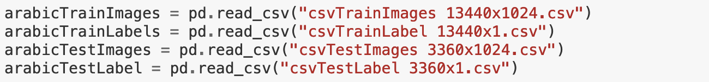 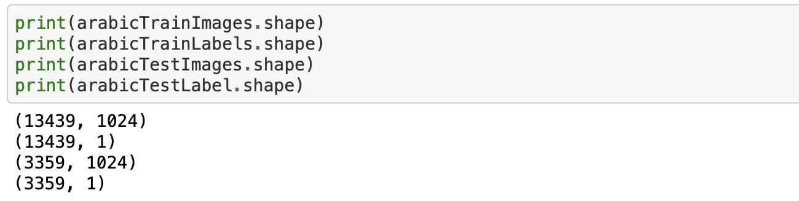While this is not a statistical analysis, it is important to consider how the results of the data may generalize based on how the data was gathered. This data was not a random sample of the population. However the question here is whether or not it was representative enough so that the real world performance will not significantly drop when deployed. I can only assume the institutions mentioned in the article are Benha University and Mansoura University in Egypt where the researchers were based at the time. I’m assuming the handwriting in this dataset will roughly represent the demographics of those universities. At this time I do not have further information to know if there is significant variability in the handwriting styles of Arabic writers throughout Iraq, Saudi Arabia, Syria, Egypt and the rest of the Arabic speaking world.
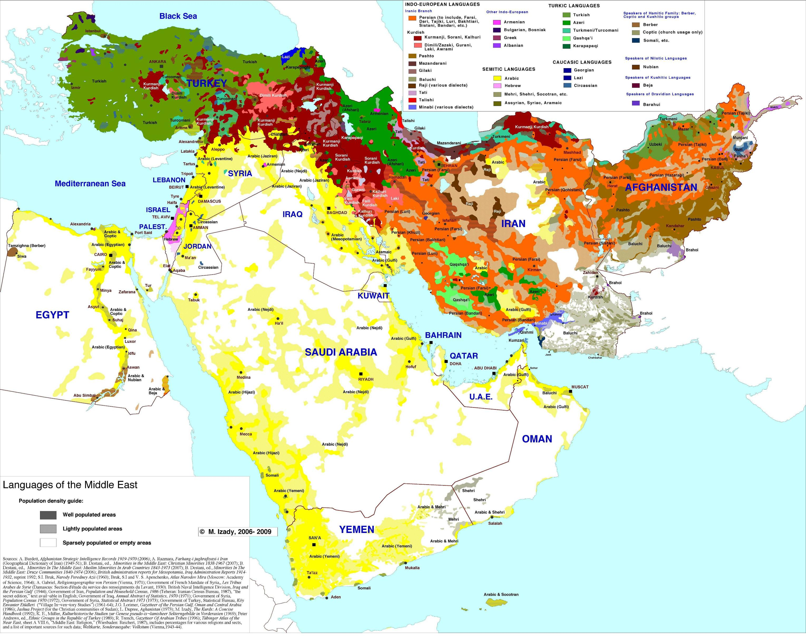 Map SourceYellow is where Arabic is spoken.
The images are shuffled because they come in alphabetical order.
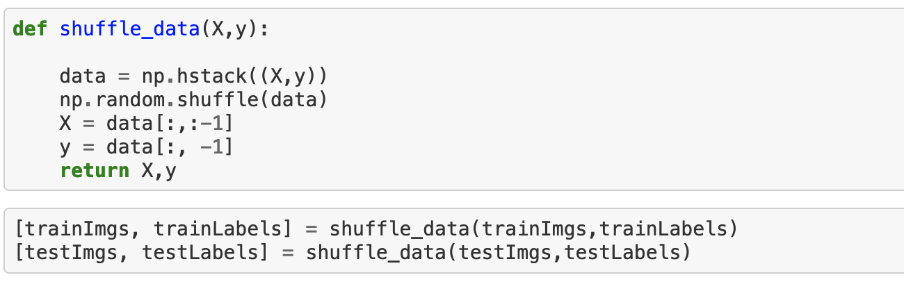They are normalized to fall within the standard 0 to 255 pixel brightness range for grey-scale images.
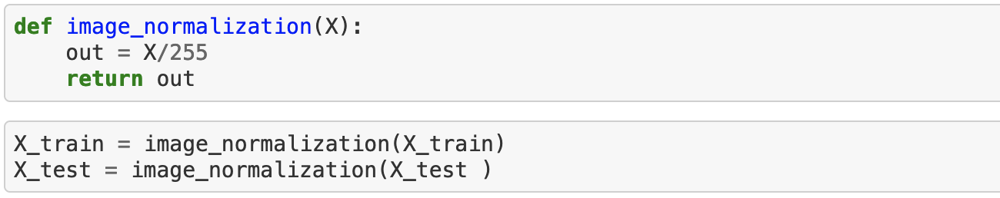The labels are one hot encoded. Unlike the English alphabet the Arabic alphabet has 28 letters.
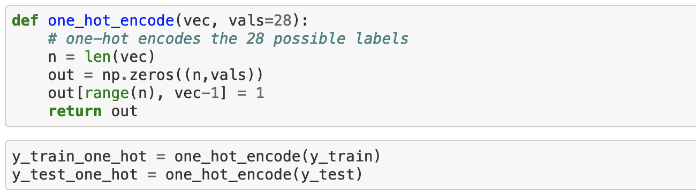The tools for splitting the data into batches and feeding them to the training process are set up.
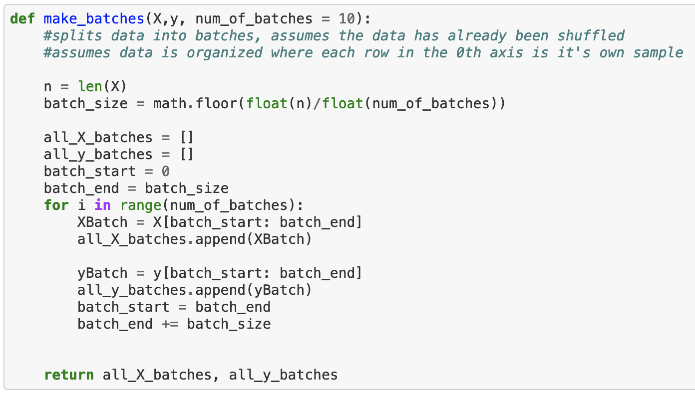 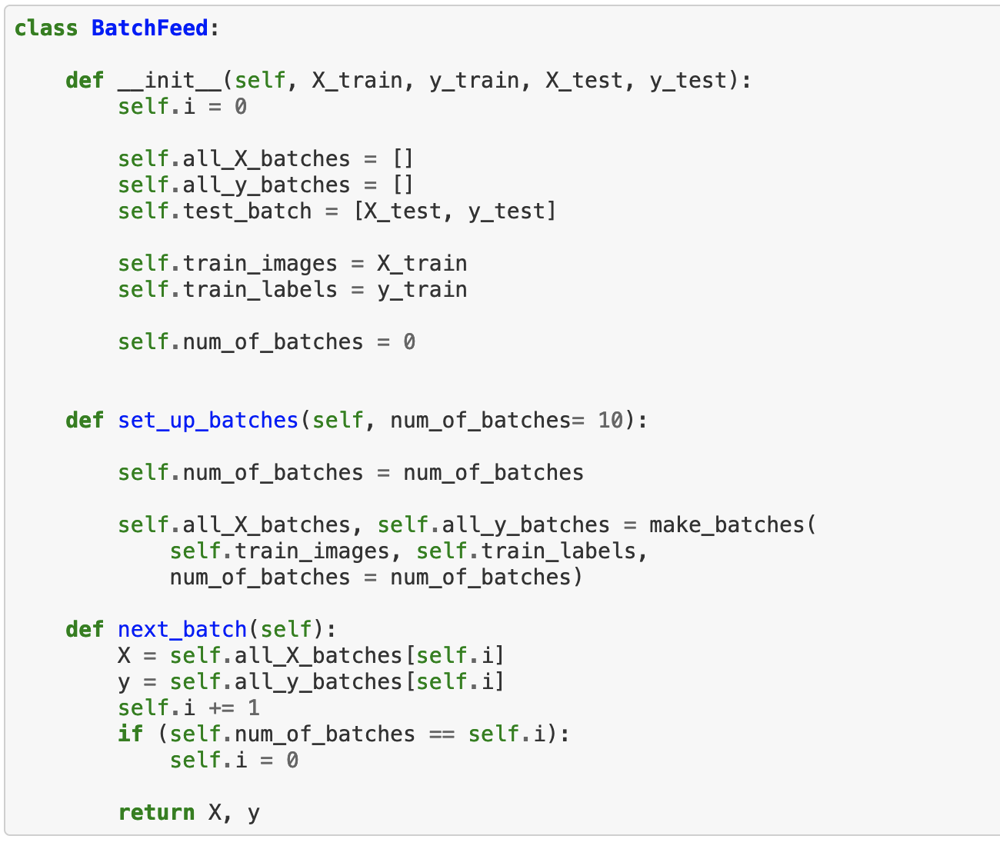 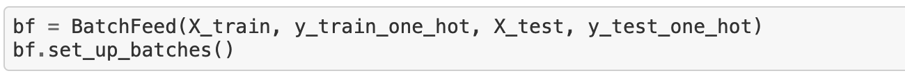The structure of the neural network is very similar to LeNet-5. There are a few key differences the pooling layers I used are max pooling instead of average pooling. The activation function used throughout the network is ReLU instead of Tanh. The first of the two fully connected layers uses dropout. The output layer is a softmax layer rather than a RBF (noted in the image as Gaussian Connections). Here is a diagram of the LeNet-5 architecture.
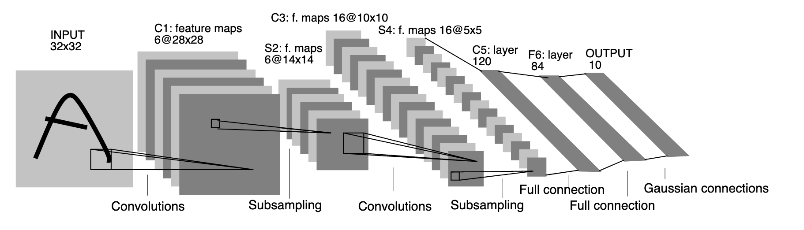Set up the functions for how the layers will be built.
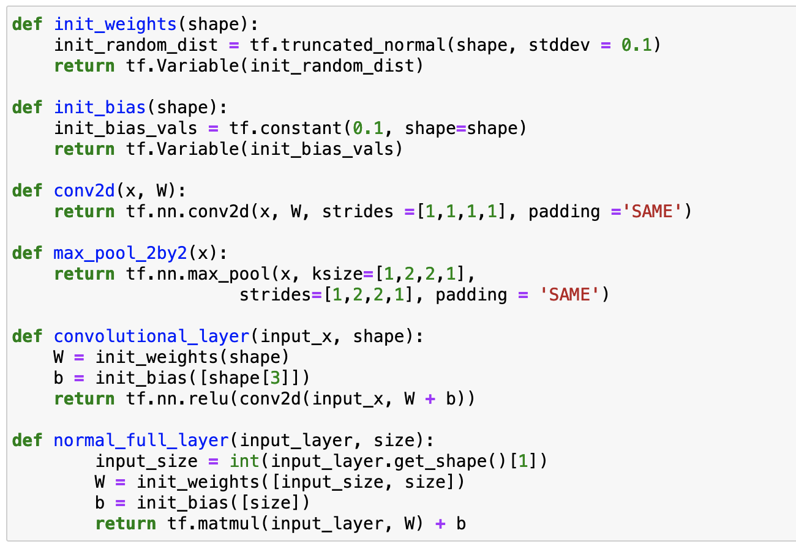Setting up the network architecture. Here I have convolutional layer 1, max pooling layer 1, convolutional layer 2, max pooling layer 2, fully connected layer 1, dropout on the first fully connected layer, fully connected layer 2, a softmax function, and then a cross-entropy loss function.
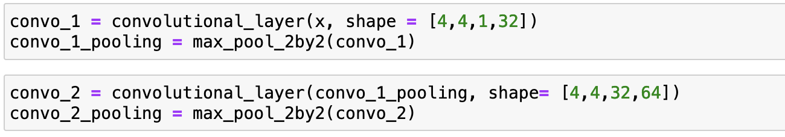 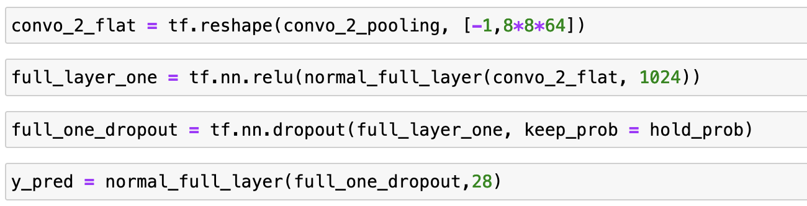 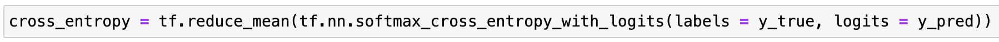Adam optimiser and cross entropy loss function setup.
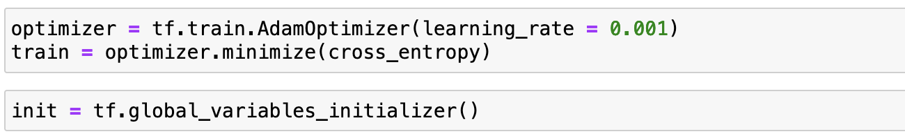The publishers of the dataset on Kaggle reported a 94.9% accuracy with a very similar architecture. They used stochastic gradient descent instead of ADAM. For a basic proof-of-concept model with no hyperparameter tuning 93.3% is acceptable. However were this to be submitted to a competition or put into deployment hyperparameter tuning is essential.
For a model like this to be put into production not only would there have to be improvements in order to make the accuracy competitive but also further information about the origins of the dataset would have to be found. For modern applications, I wouldn’t choose this kind of model for handwriting OCR. I would build a detection CNN (DCNN) instead. This would increase the versatility of the application and reduce implementation costs in terms of writing additional code to identify text and segment characters for labeling. Ideally this kind of model would be used in digitizing documents or as part of a machine translation mobile app.
{kind=link}